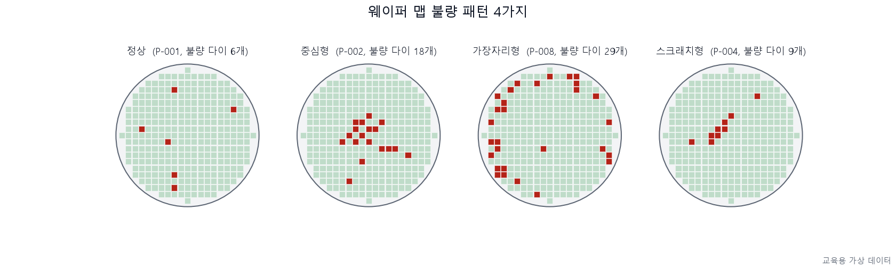

Tree를 끌어 와 File과 잇는다. Tree를 더블클릭해 Limit the maximal tree depth to 칸의 100을 4로 바꾼다.
왼쪽 Visualize 묶음의 Tree Viewer를 Tree에 잇고 더블클릭한다.오늘의 질문: "지난 기록만 보고, 아직 검사하지 않은 로트의 합격/불합격을 미리 맞힐 수 있을까?"
오늘의 미션 — 입사 아홉째 날, 지난 공정 기록 750건을 받았다. 검사 전에 합격/불합격을 미리 맞히는 모델을 만들자. 그런데 '무조건 합격'이라고 찍는 것보다 나을까? (신입 데이터 담당자의 10일 이야기와 공장·설비·데이터는 모두 교육용 가상이다.)

train_test_split → fit → accuracy_score)로 같은 모델을 만들고, 정확도를 "무조건 합격" 기준선과 비교할 수 있다.선수 지식: 8차시 — 기준선, "원인 후보"로 말하기 / 7차시 — 합격률, 웨이퍼 불량 모양 / 6차시 — 웨이퍼 맵 / 5차시 — dropna() / 3차시 — 규칙으로 직접 판정하기
웨이퍼는 ②~⑥ 공정을 여러 번 거친 뒤에야 ⑦ 전기 검사(EDS)를 받는다. 검사 전에 "이 로트는 불합격이 나올 것 같다"를 미리 알 수 있다면 먼저 살펴볼 로트를 고를 수 있다.
3차시에는 사람이 if로 규칙을 직접 썼다. 오늘은 컴퓨터가 지난 기록에서 규칙을 찾게 한다. 이것이 머신러닝이다.
그리고 8차시처럼, 숫자 하나가 좋아 보여도 기준선과 나란히 놓고 판단한다.
합격여부가 들어간 쌍이 목록에 없었다. 왜일까?합격여부는 결과(범주) 열이라 숫자 열끼리 계산하는 Correlations에 나오지 않는다. 오늘은 바로 이 결과 열을 맞힐 목표로 쓴다.| 말 | 뜻 |
|---|---|
| 캔버스 | 위젯을 놓고 선으로 잇는 가운데 하얀 작업판 |
| 위젯 | 한 가지 일을 하는 기능 상자. 더블클릭하면 자기 창이 열린다 |
워크플로(.ows) | 캔버스에 놓은 위젯과 연결을 통째로 저장한 파일 |
.tab | Orange가 읽는 표 파일. CSV와 내용은 같고, 열마다 종류·역할이 적혀 있다. 오늘은 맞힐 열(목표 열)이 미리 정해져 있다 |
| 툴팁 | 마우스를 올리고 잠시 기다리면 뜨는 작은 설명 상자 |
| CA, AUC·F1·Prec·Recall·MCC | Test and Score 표의 점수 칸들. CA(Classification Accuracy)가 정확도다. 나머지는 다른 채점 방법이라 오늘은 보지 않는다 — 첫 숫자 칸 AUC는 정확도가 아니다 |
| nodes, leaves | Tree Viewer 왼쪽 정보 줄의 숫자. nodes = 상자 전체 수, leaves = 끝 상자(잎) 수 |
| 위젯(화면 이름) | 어느 묶음에 있나 | 한국어 뜻 | 오늘 하는 일 |
|---|---|---|---|
File | Data | 파일 불러오기 | 표 파일을 연다. _start.ows에 이미 들어 있다 |
Distributions | Visualize | 분포 막대 | 맞힐 열의 값마다 몇 건인지 막대로 본다(1차시에 써 봤다) |
Tree | Model | 결정 트리 | 오늘 새 위젯. 지난 기록에서 스무고개 같은 질문 순서(규칙)를 찾는다 |
Tree Viewer | Visualize | 트리 보기 | 오늘 새 위젯. Tree가 찾은 질문 순서를 나무 그림으로 본다 |
Test and Score | Evaluate | 평가 | 오늘 새 위젯. 트리가 처음 보는 기록을 얼마나 맞히는지 채점한다. CA 열이 정확도다 |
Confusion Matrix | Evaluate | 헷갈림 표 | 오늘 새 위젯. 어떤 답을 어떤 답으로 헷갈렸는지 칸마다 센다 |

1차시에 본 공정 지도(교육용 단순화, 가상 데이터로 그린 그림). ②~⑥은 층을 쌓을 때마다 여러 번 되풀이하고, ⑦ EDS에서 다이마다 전기를 흘려 합격·불합격을 가린다.
week09_orange_wafer_patterns.csv — 공정 지도 위치: ⑦ EDS(전기 검사) 결과로 그린 웨이퍼 맵을 웨이퍼마다 숫자 넷으로 요약한 표.week09_pass_fail_train.csv — 공정 지도 위치: ②~⑤ + 세정의 공정 조건과 검사 결과(공정 중간 검사 + ⑦ EDS 결과를 모은 교육용 설정). 공정 조건만 보고 검사 결과를 미리 맞혀 본다.머신러닝 모델은 "문제(보고 판단할 값)"와 "정답"이 함께 적힌 지난 기록을 보고, 문제에서 정답으로 가는 규칙을 스스로 찾는다. 규칙을 찾는 일을 학습, 새 기록에 규칙을 적용해 답을 내는 일을 예측이라고 한다.
| 말 | 뜻 | 피자 가게 | 오늘 공정 기록 |
|---|---|---|---|
Feature(특성, X) | 모델이 보고 판단할 열 | 반죽 두께, 오븐 온도, 굽는 시간 | 온도_C, 압력_Pa, 가스유량_slm, 두께_nm, 진공도_mTorr, 습도_pct |
Label(정답, y) | 맞혀야 할 열 | 탔다 / 안 탔다 | 합격여부(1 = 합격, -1 = 불합격) |
Orange에서는 .tab 파일에 Label이 목표 열(target)로 미리 정해져 있다. 파이썬에서는 PART 2에서 X와 y를 직접 나눈다.
결정 트리는 "예/아니요"로 답할 수 있는 질문을 차례로 던져 기록을 나누는 모델이다. 스무고개와 같다. 피자 가게라면 "오븐 온도가 230도 이하인가?"처럼 묻고, 답에 따라 두 갈래로 나눈 뒤, 갈래마다 다시 묻는다.
검색어 결정 트리 스무고개
머신러닝을 처음 배우는 사람에게 결정 트리가 스무고개와 어떻게 비슷한지 3문장으로 설명해줘. 트리의 맨 위 질문과 맨 끝 잎이 각각 무엇을 뜻하는지도 알려줘.모델을 학습시킨 기록으로 다시 채점하면 점수가 부풀려진다. 연습문제 답을 외운 학생에게 같은 문제로 시험을 보는 것과 같다. 그래서 기록을 나눈다.
검색어 과적합 뜻
머신러닝의 과적합(overfitting)을 기출문제 답만 외운 학생에 비유해서 머신러닝을 처음 배우는 사람에게 3문장으로 설명해줘. 학습용과 시험용 데이터를 나누는 이유도 알려줘.정확도는 시험용 기록 중 맞힌 비율이다. Orange Test and Score에서는 CA(Classification Accuracy) 열에 0~1 사이 소수로 나온다. 0.80이면 80%다.
정확도 하나로는 좋고 나쁨을 모른다. 8차시처럼 기준선과 비교한다. 오늘의 기준선은 "늘 가장 흔한 답만 찍었을 때의 정확도"다. 합격이 대부분인 기록이라면 "무조건 합격"만 말해도 정확도가 높게 나온다.
그런데 "무조건 합격"은 불합격을 하나도 잡지 못한다. 그래서 정확도가 기준선과 비슷해도, 모델이 불합격을 몇 건 잡았는지는 따로 세어 봐야 한다. 그 일을 하는 것이 아래 헷갈림 표다.
검색어 정확도의 함정 불균형 데이터
합격이 80%, 불합격이 20%인 데이터에서 모델 정확도 80%가 왜 좋은 점수가 아닐 수 있는지 데이터 분석을 처음 배우는 사람에게 3문장으로 설명해줘. 정확도 말고 무엇을 함께 봐야 하는지도 알려줘.6·7차시에 웨이퍼 맵에서 불량 다이(칩이 될 작은 네모)가 가장자리 고리나 한 줄로 몰린 모양을 눈으로 찾았다. 7차시에 "9차시에 다시 만난다"고 했던 불량 모양(가장자리형·스크래치형)이다. 오늘은 그 모양을 트리가 숫자만 보고 맞히게 한다.

웨이퍼 맵 불량 모양 4가지 — 정상·중심형·가장자리형·스크래치형(P-001, P-002, P-008, P-004). 빨강 = 불합격 다이, 옅은 초록 = 합격 다이. 이 가상 웨이퍼 한 장에는 다이가 317개다(실제 다이 수는 칩 크기에 따라 다르다). 교육용 가상 데이터로 그린 그림.
week09_orange_wafer_patterns.csv(240행 6열, 교육용 가상 데이터)는 웨이퍼 240장의 맵을 한 장에 한 행씩 숫자 넷으로 요약했다. 한 행 = 웨이퍼 1장이다.
| 열 | 뜻 |
|---|---|
웨이퍼ID | 웨이퍼 번호(P-001~P-240). 이름표라 Orange에서는 학습에 쓰지 않는다(meta) |
불량다이수_count | 그 웨이퍼의 불합격 다이 개수(count = 센 수) |
중심불량비율_pct | 불합격 다이 중 가운데(중심에서 42mm 안)에 있는 비율(퍼센트) |
가장자리불량비율_pct | 불합격 다이 중 가장자리(중심에서 112mm 밖)에 있는 비율. 이 가상 웨이퍼는 지름 300mm(6차시와 같은 설정)다 |
직선불량비율_pct | 불합격 다이 중 한 직선 위에 늘어선 비율(긁힘 단서) |
불량패턴 | 목표 열(Label). 정상 120장 · 중심형 40장 · 가장자리형 40장 · 스크래치형 40장. 정상은 불량 다이가 몇 개(이 데이터에서 3~8개) 흩어져 있을 뿐 뚜렷한 모양이 없는 웨이퍼다(7차시의 "없음"). 불량 0개라는 뜻이 아니다 |
week09_1_patterns_start.ows를 연다.week09_1_patterns_done.ows(완성본)를 연다.
Tree를 끌어 와 File과 잇는다. Tree를 더블클릭해 Limit the maximal tree depth to 칸의 100을 4로 바꾼다.
왼쪽 Visualize 묶음의 Tree Viewer를 Tree에 잇고 더블클릭한다.75.0%, 30/40이라면 "40장 중 30장이 그 답"이라는 뜻이다. 상자 맨 아래 열 이름이 그 상자에서 던지는 다음 질문이고, 아래로 뻗은 선 옆의 ≤ 숫자, > 숫자가 질문의 답이다.40/40이라고 적힌 상자를 찾아, 그 바로 위 선에 적힌 질문을 읽는다.
가장자리불량비율_pct 질문의 > 35.3 쪽 상자가 가장자리형 · 100%, 40/40 — 가장자리형 40장이 모두 이 한 상자에 모인다(다른 모양은 여러 상자에 나뉜다).
6·7차시에 사람이 눈으로 찾던 "가장자리 고리"를 트리는 "불량 다이 개수가 많은 쪽 갈래로 온 웨이퍼 중에서, 가장자리 비율이 35.3%를 넘는가?"라는 규칙으로 찾았다.
개수 질문이 먼저 있어야 이 규칙이 통한다 — 이 가상 웨이퍼는 다이의 약 38%가 가장자리에 있어서, 불량이 흩어져 있기만 해도 가장자리 비율이 40% 가까이 나온다.
맨 위 첫 질문(뿌리)이 무엇인지는 PART 3 실습지 문제 3에서 적는다.

Test and Score를 File과 잇고, Tree도 Test and Score에 잇는다(선 두 개).
더블클릭해 왼쪽 Cross validation의 Number of folds를 10으로 고른다. 오른쪽 표의 Tree 줄에 점수가 나온다. 표에는 AUC·CA·F1·Prec·Recall·MCC가 나오는데, 오늘은 CA 한 칸만 읽는다 — 첫 숫자 칸 AUC는 정확도가 아니다.Confusion Matrix를 Test and Score에 잇고 더블클릭한다. 왼쪽 Learners에 Tree가 골라져 있고, Show가 Number of instances(건수)인지 본다.
(더 해 보기 — 캔버스 메모 ⑤) Visualize 묶음의 Distributions를 File에 잇고, 왼쪽 Variable에서 불량패턴을 고른 뒤 Split by를 None으로 바꾸면 패턴마다 몇 장인지 막대로 보인다.
같은 위젯으로 공정 기록 week09_pass_fail_train.csv(750행 9열, 교육용 가상 데이터)를 본다. 한 행 = 공정 작업 기록 1건과 그 뒤 검사 결과다.
| 열 | 공장에서의 뜻 |
|---|---|
공정명, 설비번호 | 어떤 작업(산화·포토·식각·증착·세정)을 어느 기계(EQ-01~EQ-04)에서 했나. 설비 4대가 여러 공정 기록을 함께 남겼다(교육용 가상 기록). 글자 열이라 오늘은 Feature로 쓰지 않는다(Orange에서도 meta) |
온도_C, 압력_Pa | 설비 안 작업 공간(챔버)의 온도(_C = 섭씨 도)와 압력(파스칼). 압력은 교육용 값이라 크기를 해석하지 않는다 |
가스유량_slm | 흘려 넣은 가스의 양(slm은 분당 흘려 넣은 가스 양의 단위) |
두께_nm, 진공도_mTorr | 작업 뒤 막의 두께(nm = 10억분의 1m), 챔버 안에 남은 기체의 압력(숫자가 작을수록 진공에 가깝다) |
습도_pct | 클린룸 공기의 습도(퍼센트) |
합격여부 | 목표 열(Label). 그 작업 기록에 붙여 둔 검사 결과(공정 중간 검사와 ⑦ EDS 결과를 한 열에 모은 교육용 설정), 행마다. 1 = 합격, -1 = 불합격. 같은 로트가 여러 행에 나올 수 있다 |
온도·두께·진공도도 다섯 공정 모두 비슷한 크기로 만든 교육용 값이라, 실제 공정 조건(공정마다 크게 다르다)으로 읽지 않는다.
File → Open으로 week09_2_passfail_start.ows를 연다. File을 더블클릭해 750행이 들어왔는지 본다(캔버스 메모 ①).
Distributions를 잇고, Variable에서 합격여부를 고른 뒤 Split by를 None으로 바꾼다. 막대 두 개의 건수를 읽고, 합격이 전체 750건의 몇 %인지 계산한다.
Tree를 잇고 깊이를 4로 바꾼 뒤, Tree에 Tree Viewer를 잇는다. Show details in non-leaves에 체크하고, 맨 위 상자 아래쪽의 열 이름과, 왼쪽 갈래 상자의 굵은 글자·숫자를 읽는다.온도_C다. 뿌리 상자의 1 · 79.3%, 595/750은 1단계 Distributions로 구한 기준선과 같다 — 아무 질문도 하지 않았을 때 가장 흔한 답(합격)의 비율이다.
≤ 293.8 갈래 상자는 -1 · 56.0%, 42/75 — 온도가 293.8 이하인 기록 75건 중 42건이 불합격이다. > 293.8 갈래는 1 · 83.2%, 561/674다.
(두 갈래를 더하면 749건이다. 온도 칸이 빈 1건은 Orange가 따로 처리한다.)
한 줄 더 내려가 보자 — > 293.8 갈래는 다시 온도_C로 나뉜다. 293.8~306.0 상자는 1 · 87.2%, 518/594(불합격 76건, 12.8%), > 306.0 상자는 1 · 53.8%, 43/80(불합격 37건, 46.2%)이다.
온도가 낮은 쪽(56.0%)과 높은 쪽(46.2%) 양쪽 끝에 불합격이 많고 가운데는 적다. 8차시 진공도처럼 "양쪽 끝이 나쁜" 모양이다(교육용 가상 관계).

공장 말로 읽기 — 트리는 공정 조건 여섯 개 중 온도_C로 먼저 나눴다. 그래도 "온도가 불합격의 원인"이라고 단정하지 않는다.
트리는 기록을 잘 나누는 열을 고를 뿐이다. 같은 때 함께 달라진 다른 조건이 있었을 수 있다. 데이터로 말할 수 있는 것은 "온도는 불합격의 원인 후보"까지다.
검색어 예측과 인과 차이
결정 트리가 공장 기록에서 어떤 공정 값 하나로 합격·불합격을 가장 먼저 나눴다면, 그 값이 불합격의 원인이라고 말할 수 있는지 데이터 분석을 처음 배우는 사람에게 3문장으로 설명해줘. 예측을 잘하는 것과 원인을 아는 것이 어떻게 다른지도 알려줘.캔버스 메모 ④(Test and Score와 Confusion Matrix)는 PART 3 실습지 문제 4에서 직접 잇는다. 이 공정 기록의 트리가 기준선 79.3%보다 나은지는 거기서 확인한다.
웨이퍼 맵 요약에는 모양을 가르는 뚜렷한 단서(가장자리 비율 등)가 있었다. 공정 기록에는 그런 단서가 있을까? 두 데이터의 정확도를 각자의 기준선과 나란히 놓는 것이 오늘의 미션이다 — 실습지 문제 3·4에서 숫자를 모은다.
PART 1에서 Orange 위젯으로 한 일을 파이썬 몇 줄로 다시 한다. 짝을 지어 보면 이렇다.
| Orange(PART 1) | 파이썬(PART 2) |
|---|---|
| File — 표 불러오기, 목표 열이 미리 정해져 있다 | pd.read_csv(...)로 읽고 X(Feature)와 y(Label)를 직접 나눈다 |
| Test and Score — 10겹으로 돌아가며 채점 | train_test_split으로 학습용 80% · 시험용 20%를 한 번 나눈다 |
| Tree — 깊이 4 | DecisionTreeClassifier(max_depth=4, ...)를 만들고 .fit으로 학습시킨다 |
| CA 열 | accuracy_score로 시험용 정확도를 구한다 |
5차시처럼 빈칸 행을 먼저 지운다. 결정 트리는 빈칸이 있어도 오류 없이 학습하지만, 그러면 정확도가 조용히 달라진다. 다른 모델은 빈칸이 있으면 오류가 난다.
import pandas as pd
df = pd.read_csv("week09_pass_fail_train.csv", encoding="utf-8-sig")
print(df.shape)
print(df.isna().sum())
# TODO: 빈칸이 있는 행을 지우는 함수 이름을 채우세요.
df = df.____()
print(df.shape)____에 5차시에 배운, 빈칸 행을 지우는 함수 이름을 넣는다. 아래 결과와 같게 나오면 맞다.(750, 9) 공정명 0 설비번호 0 온도_C 1 압력_Pa 3 가스유량_slm 3 두께_nm 0 진공도_mTorr 0 습도_pct 8 합격여부 0 dtype: int64 (735, 9)
빈칸이 있는 15행이 지워져 750행 → 735행이 됐다. Orange는 행을 지우지 않고 빈칸을 스스로 처리해 750행을 그대로 썼다.
X = df[features] — Feature 여섯 열을 고른다(4차시의 여러 열 고르기). y = df[...] — 정답 열 하나를 고른다.train_test_split(X, y, ...)은 네 가지를 이 순서로 돌려준다: 학습용 X, 시험용 X, 학습용 y, 시험용 y.test_size=0.2 — 시험용 20%. random_state=42 — 섞는 순서를 고정해 몇 번을 돌려도 같은 결과가 나오게 한다. stratify=y — 합격·불합격 비율을 학습용과 시험용에 똑같이 나눈다.features = ["온도_C", "압력_Pa", "가스유량_slm", "두께_nm", "진공도_mTorr", "습도_pct"]
X = df[features]
# TODO: 정답(Label) 열 이름을 채우세요.
y = df[____]
print(X.shape, y.shape)
from sklearn.model_selection import train_test_split
X_train, X_test, y_train, y_test = train_test_split(X, y, test_size=0.2, random_state=42, stratify=y)
print(len(X_train), len(X_test))y = df[____]에 맞힐 정답 열 이름을 따옴표와 함께 넣는다. 따옴표를 빠뜨리면 NameError가 난다.(735, 6) (735,) 588 147
(735, 6)은 735행 6열의 표, (735,)는 열 하나짜리 값 735개라는 뜻이다. 735행이 학습용 588개, 시험용 147개로 나뉘었다.
DecisionTreeClassifier(max_depth=4, random_state=42) — 깊이 4짜리 빈 트리를 만든다. Orange Tree 위젯을 캔버스에 놓은 것과 같다.model.fit(학습용 X, 학습용 y) — 학습. 실행하면 DecisionTreeClassifier(max_depth=4, random_state=42)라는 상자가 보인다. 오류가 아니라 "이 모델을 학습시켰다"는 표시다.accuracy_score(정답, 예측) — 맞힌 비율(0~1). 예측은 model.predict(시험용 X)로 만든다. predict는 10차시에 제대로 다룬다.from sklearn.tree import DecisionTreeClassifier
model = DecisionTreeClassifier(max_depth=4, random_state=42)
# TODO: 학습시키는 함수 이름을 채우세요.
model.____(X_train, y_train)
from sklearn.metrics import accuracy_score
# TODO: 채점에 쓰는 정답은 시험용 y입니다. 그 이름을 채우세요.
acc = accuracy_score(____, model.predict(X_test))
print(f"정확도: {round(acc * 100, 1)}%")model.____에 학습시키는 함수 이름을, accuracy_score(____, ...)에 채점에 쓰는 정답(시험용 y의 이름)을 넣는다. 정확도 셀을 학습 셀보다 먼저 실행하면 NotFittedError가 난다 — 위에서부터 차례로 실행한다.비교 기준: 시험용 147개 중 합격은 116개다. 모두 "합격"이라고 찍으면 116 ÷ 147 ≈ 78.9%를 맞힌다(파이썬 쪽 기준선). 실행 결과를 보기 전에, 이 모델이 기준선보다 얼마나 나을지 예상해 보자.
DecisionTreeClassifier(max_depth=4, random_state=42) 정확도: 80.3%80.3%는 기준선 78.9%보다 1.4%p 높을 뿐이다. 시험용 147개 중 118개를 맞혔는데, "무조건 합격"은 116개를 맞힌다 — 겨우 2개 차이다. 이 숫자 하나로 "좋은 모델"이라고 말하기 어렵다. 반대로 "무조건 합격"이 더 낫다는 뜻도 아니다. 이 모델은 시험용 불합격 31개 중 9개를 잡고 22개를 놓쳤다. "무조건 합격"은 31개를 모두 놓친다 — 정확도가 비슷해도 하는 일은 다르다.
노트북 4단계(실습지 문제 1·2)에서는 Orange 첫 질문이었던 온도_C 한 열만 보는 모델을 같은 모양으로 직접 만들어 비교한다.
ChatGPT에 분석 코드를 부탁할 수 있다. 다만 AI가 준 코드는 직접 실행해 숫자를 확인한 뒤에만 믿는다. 조건 하나가 빠지면 오류 없이 다른 숫자가 나온다. 노트북 3단계에서 한다.
week09_pass_fail_train.csv 파일을 pandas로 읽어(encoding="utf-8-sig") 빈칸이 있는 행을 지우고, 온도_C·압력_Pa·가스유량_slm·두께_nm·진공도_mTorr·습도_pct 여섯 열로 합격여부(1 = 합격, -1 = 불합격)를 예측하는 결정 트리를 만들어 줘. train_test_split(test_size=0.2, random_state=42, stratify=y)와 DecisionTreeClassifier(max_depth=4, random_state=42)를 쓰고 시험용 정확도를 출력해 줘. 10줄 이내, 한국어 주석으로. 교육용 가상 데이터야.# ChatGPT가 준 코드를 여기에 붙여 넣고 실행하세요.)에 붙여 넣고 실행한다. ChatGPT를 쓸 수 없으면 아래 응답 예시 셀을 실행한다.응답 예시 · 실제 AI 응답 아님(강사가 만든 예시 코드)
# 1) 데이터 읽기와 빈칸 정리
import pandas as pd
from sklearn.model_selection import train_test_split
from sklearn.tree import DecisionTreeClassifier
from sklearn.metrics import accuracy_score
data = pd.read_csv("week09_pass_fail_train.csv", encoding="utf-8-sig").dropna()
# 2) 입력(X)과 정답(y) 나누기
X = data[["온도_C", "압력_Pa", "가스유량_slm", "두께_nm", "진공도_mTorr", "습도_pct"]]
y = data["합격여부"]
# 3) 학습용·시험용으로 나누고 결정 트리 학습
X_tr, X_te, y_tr, y_te = train_test_split(X, y, test_size=0.2, random_state=42, stratify=y)
clf = DecisionTreeClassifier(max_depth=4, random_state=42).fit(X_tr, y_tr)
# 4) 정확도 출력
print("정확도:", accuracy_score(y_te, clf.predict(X_te)))data, X_tr, clf). AI는 이름을 마음대로 고른다. 이름보다 조건이 같은지를 본다..fit(...)을 만드는 줄 끝에 붙여 한 줄로 썼다. 하는 일은 2단계와 같다.dropna, test_size, random_state, stratify, max_depth, 열 6개)을 하나씩 찾는다.정확도: 0.80272108843537420~1 사이 소수로 찍혔다. × 100 하면 80.3%로 2단계와 같다 — 이 코드는 검증을 통과했다. 조건이 하나 빠졌을 때 실제로 나오는 숫자는 이렇다(같은 데이터로 직접 실행한 결과).
| 빠진 조건 | 정확도 | 오류 |
|---|---|---|
stratify=y | 77.6% | 없음 |
max_depth=4(깊이 제한 없음) | 74.8% | 없음 — 지난 기록을 외운 트리가 처음 보는 기록에서는 더 못 맞힌다 |
dropna() | 79.3%(시험용 150개 중 119개) | 없음 — 결정 트리는 빈칸이 있어도 학습한다. Orange 기준선 79.3%와는 숫자만 우연히 같다 |
stratify=y만 지운 뒤 실행한다. 오류 없이 숫자만 바뀌는 것을 직접 보고, 위 표의 숫자와 맞춰 본다.오늘 한 일을 순서대로 다시 짚는다. Orange는 캔버스 메모 번호, 파이썬은 노트북 단계 번호다.
week09_1_patterns_start.ows: Tree(깊이 4) → Tree Viewer, Test and Score(10겹) → Confusion Matrix. 가장자리형 100% 상자와 정상으로 헷갈린 칸을 찾았다. (캔버스 메모 ②~④)week09_2_passfail_start.ows: Distributions로 기준선, Tree Viewer로 첫 질문 온도_C를 읽었다. (캔버스 메모 ②~③)dropna()로 750행 → 735행. (노트북 1단계)fit → 시험용 정답 y_test로 정확도. (노트북 2단계)stratify=y를 지워 숫자가 바뀌는 것을 본다. (노트북 3단계)9차시 실습지를 열고 순서대로 푼다.
온도_C 한 열로 Feature를 만들어 학습용·시험용으로 나누고(문제 1), 2단계와 같은 모양으로 학습·채점 코드를 빈칸 없이 직접 쓴다(문제 2). 4단계 숫자가 실습지와 다르면 Kernel → Restart Kernel and Run All Cells… 로 처음부터 다시 실행합니다(3단계에 붙여 넣은 코드가 df·y를 바꿨을 수 있다).week09_1_patterns 캔버스에서 첫 질문과 CA를 읽고 기준선과 비교한다.week09_2_passfail 캔버스에 Test and Score와 Confusion Matrix를 이어(캔버스 메모 ④) CA와 놓친 불합격 칸을 읽는다.다 풀면 실습지의 "정답 보기"로 확인하고, 문제 5의 문장을 옆 사람에게 읽어 준다.
X = df[features](공정 조건 6열), y = df["합격여부"]가장자리불량비율_pct > 35.3?" → 가장자리형 40장이 모두 한 상자에week09_orange_wafer_patterns.csv — 240행 6열, 교육용 가상 데이터(PART 1 워밍업, Orange는 orange/ 폴더의 .tab을 연다). 정상 120 · 중심형 40 · 가장자리형 40 · 스크래치형 40장(정상도 불량 다이가 3~8개 있다).
공정 지도 위치: ⑦ EDS(전기 검사) 웨이퍼 맵의 요약.week09_pass_fail_train.csv — 750행 9열, 교육용 가상 데이터(PART 1·2·3). 빈칸 15칸(dropna() 뒤 735행). 합격이 불합격보다 훨씬 많다. 설비 4대(EQ-01~EQ-04)가 여러 공정 기록을 함께 남겼다(교육용 가상 기록).
공정 지도 위치: ②~⑤ + 세정의 공정 조건과 검사 결과(공정 중간 검사 + ⑦ EDS 결과를 모은 교육용 설정).model.fit)을 실행하기 전에 정확도 셀을 실행하면
NotFittedError: This DecisionTreeClassifier instance is not fitted yet. Call 'fit' with appropriate arguments before using this estimator.가 난다. 위에서부터 차례로 실행한다.
features에 "합격여부"까지 넣으면 오류 없이 정확도 100%가 나온다(오늘 코드 기준). 정답을 보고 맞힌 것이다.
글자 열을 넣으면 반대로 ValueError: could not convert string to float: 'EQ-02'가 난다 — 오늘 Feature는 숫자 열 6개뿐이다.
dropna() 셀을 건너뛰어도 결정 트리는 오류 없이 학습한다. 대신 정확도가 79.3%로 조용히 달라진다(Orange 기준선 79.3%와는 숫자만 우연히 같다). 숫자가 강의와 다르면 print(df.shape)가 (735, 9)인지부터 본다.
____를 채우지 않으면 NameError: name '____' is not defined(열 이름 자리),
AttributeError: 'DataFrame' object has no attribute '____'(dropna 자리), AttributeError: 'DecisionTreeClassifier' object has no attribute '____'(fit 자리)가 난다. 빈칸을 아직 안 채웠다는 뜻이다.
열 이름은 따옴표 안에 쓴다 — df[합격여부]처럼 따옴표를 빠뜨리면 NameError: name '합격여부' is not defined가 난다.
앞 셀이 실패하면 다음 셀에서도 오류가 이어진다 — NameError: name 'y' is not defined, name 'y_test', name 'X1'이 나오면 그 이름을 만드는 앞 셀부터 고쳐 다시 실행한다.
실습지 문제 1에서 열 이름을 대괄호 없이 문자열로만 쓰면 (735,)가 나오고, 학습할 때 ValueError: Expected a 2-dimensional container but got <class 'pandas.Series'> instead.로 시작하는 오류가 난다.
온도_C였고, 온도가 낮은 쪽(≤ 293.8, 56.0%)과 높은 쪽(> 306.0, 46.2%)에 불합격이 많았다 → 온도는 불합격의 원인 후보다. Tree CA 0.783, 놓친 불합격 114건 / 잡은 불합격 41건.복습 문제 전체는 quiz.json(수업 후 자율 복습)에 있다. 아래는 그중 일부다.
합격여부를 Feature에 넣으면 정답 누설이다.4 · 1 · 1 · 34였다(Predicted 정상·중심형·가장자리형·스크래치형 순서). 맨 앞의 4는 무엇인가?온도_C였다. "온도 때문에 불합격이 났다"고 보고해도 될까? 한 문장으로 답해 보자.PART 2에서 받은 코드를 바탕으로 ChatGPT에 한 가지를 더 물어보자. 받은 코드는 노트북 3단계 빈 셀에 붙여 실행하고, 숫자를 위 "응답 예시 실행 결과" 표와 맞춰 본다.
방금 준 결정 트리 코드에서 max_depth를 2, 4, 깊이 제한 없음(None) 세 가지로 바꿔 가며 학습용 정확도와 시험용 정확도를 함께 출력하는 짧은 코드를 만들어 줘. 다른 조건은 그대로 두고, 한국어 주석으로.진공도_mTorr 한 열만 보는 모델을 만들어 정확도를 구하고, 6개 열 모델(80.3%)·기준선(78.9%)과 나란히 놓아 한 문장으로 비교한다. 변수 이름은 X2, model2처럼 새로 붙인다.
불량다이수_count ≤ 11, CA 0.942(94.2%). 가장 흔한 답 "정상"만 찍으면 120 ÷ 240 = 50%라 기준선보다 훨씬 높다 — 뚜렷한 단서가 있으면 잘 맞힌다.온도_C는 불합격의 원인 후보까지다. 잘 맞히는 것과 원인을 아는 것은 다르다.10차시는 마지막 날이다. 모델 세 가지(Tree·kNN·Logistic Regression)를 같은 기준으로 비교하고, 오늘 만든 모델로 아직 검사하지 않은 새 웨이퍼·새 로트를 예측한다. ChatGPT가 쓴 보고 문장에서 틀린 곳도 찾아 고친다.
다음 날 미션 — 마지막 날, 새 로트 9개의 예측 결과와 10일간의 분석을 보고서 한 장으로 정리하자.